ボクトロボット
作品紹介
- あらすじ
- 男の子とロボットは大の仲良し。ロボットはいつでも男の子を助けてくれる。でも本当に助けてくれているのかな……
- 制作年
- 2011
- 脚本
- 鈴木兼人
- 画
- 鈴木兼人
- 場面
- 13場面
ボクトロボット 動画（準備中）
ボクトロボット 画・脚本
#1
「ボクトロボット」
あるところに男の子とロボットがいました。
二人はとてもなかよしでした。
#2
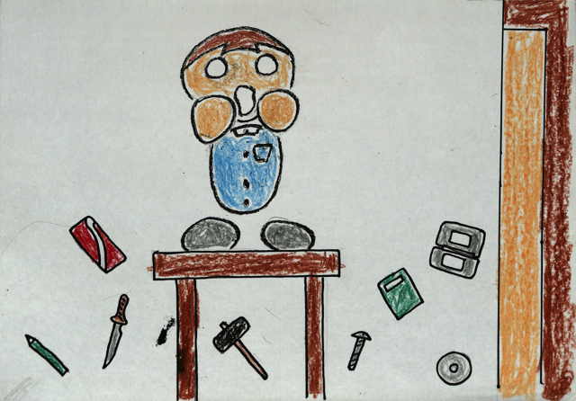
大変です！
お部屋が散らかっていて、このままではお母さんにしかられてしまいます。
そんなときもーー
シャキーン・ジャキーン、ウニャーン
#3
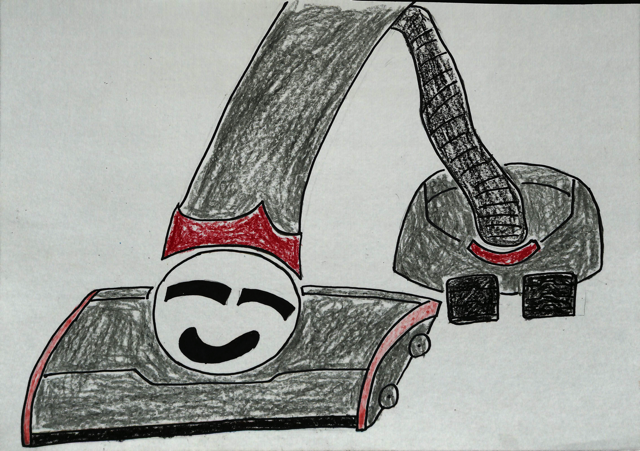
ロボットがいれば大丈夫。
掃除機に変形！！
#4
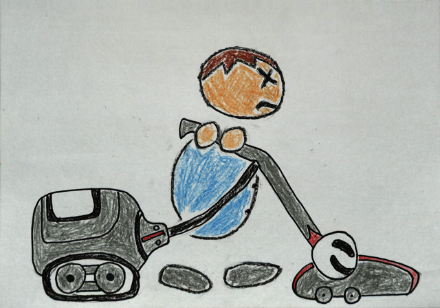
男の子は掃除機ロボットを使って、部屋をキレイにしました。
#5
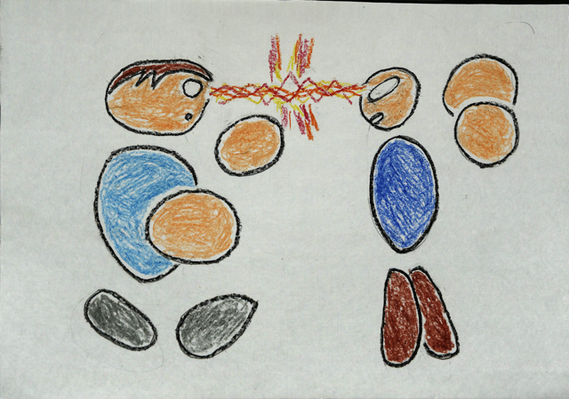
ケンカのときもロボットがいれば大丈夫。
ジャキーン・ジャキーン、ギャーン
#6
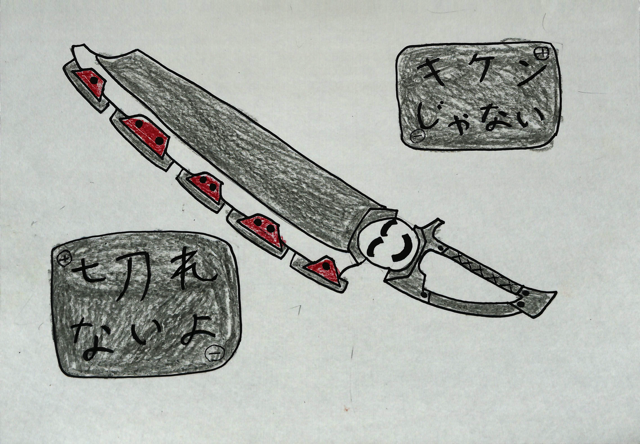
安全第一・ロボソードに変形！
#7
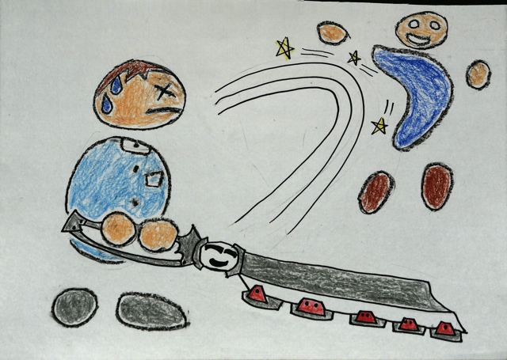
男の子はロボソードを使って、ケンカに勝つことができました。
#8
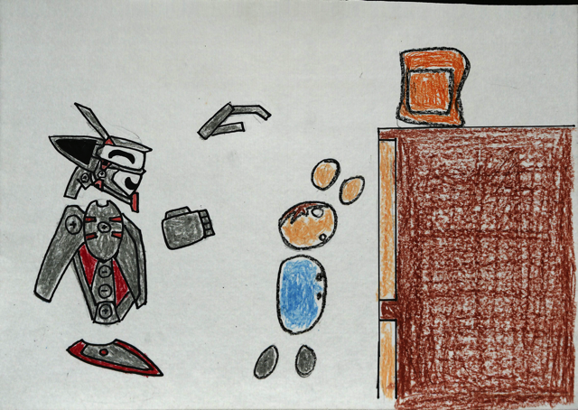
高いところにあるおかしをとりたい時も、ロボットがいれば大丈夫。
ジャキーン・ジャキーン、バビューン
#9
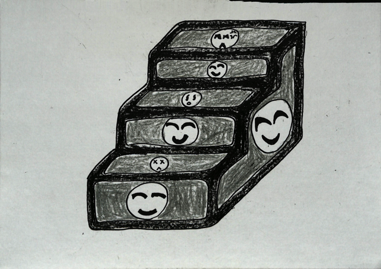
かいだんに変形！！
#10
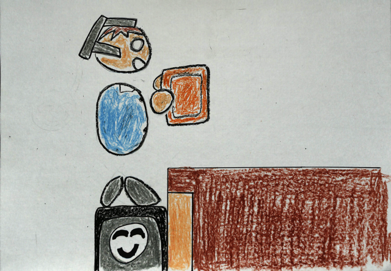
男の子はかいだんを登って、おかしをとることができました。
ですが、男の子はいいました。
男の子「ロボ、手届いてない？」
ロボット「届いてますなあ」
男の子「だったらとってくれればいいじゃん」
#11
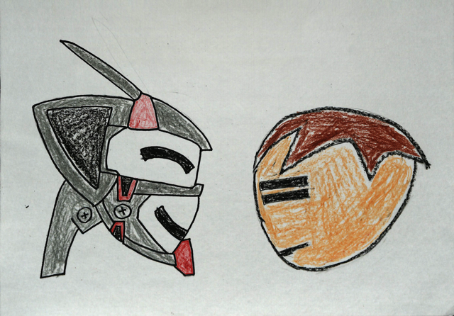
男の子「ケンカも相似も、ロボがやってくれればいいじゃん！」
ロボット「何を言うのですか。人間がなまけないように、わざと道具に変形しているのです」
男の子「本当に？」
男の子は尋ねました。
シャキーン、ジャキーン、グニャーン
#12
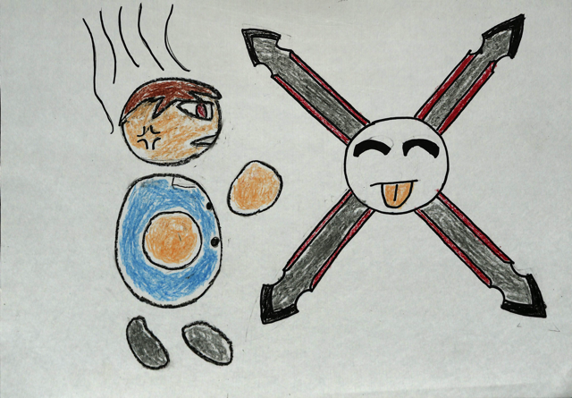
ロボット「うそですね。たまたま思いついただけであります」
男の子は怒りました。
#13
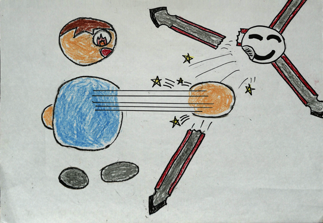
男の子「ボクは怒ったぞー！！」
男の子のパンチがサクレツしました。
ロボット「ほら、ロボに頼らなかったお陰で、こんなに強力なパンチが」
男の子「うるさい！」
二人はケンカしながらも仲良くくらしていきましたとさ。
（おしまい）
ボクトロボット PDF（準備中）
以下のリンクから、『ボクトロボット』のPDFデータをダウンロードできます。
ダウンロードして印刷し、厚紙などに貼ってご利用下さい。